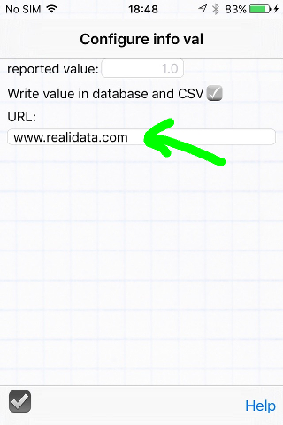
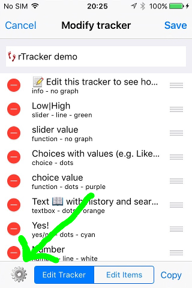
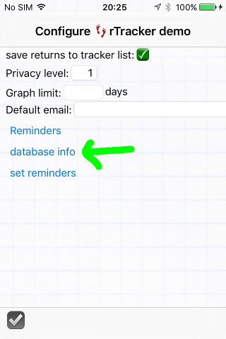
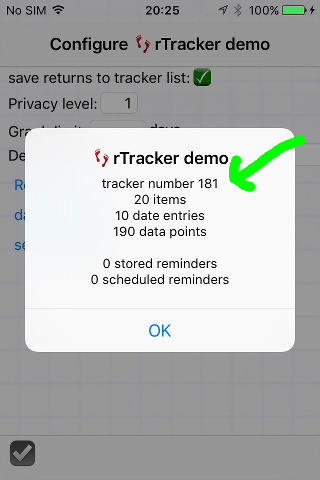

| In addition to supplying a simple
text string or blank separator line in a tracker, the Info value has
some special tricks to offer. You can assign a value to it for use within a function as a named constant. You can optionally store the value with each record in rTracker's internal database, and output it as a constant column in CSV files. An application for this would be a questionnaire with multiple users: create the questionnaire, then duplicate it for each interviewer and assign each one a separate value. Email the individual questionnaires to each user, then later they reply back the CSV files with the results. Once merged, use the identifiers to determine which records came from which user. You can assign a URL to an Info item, which will be activated when that line in the tracker is tapped. This can take the user to a website, or to another application with a URL scheme as described below, leaving a 'return to rTracker' button in the top left corner. |
 |
| rTracker:// | Opens the tracker list (main page) within rTracker. |
| rTracker://tid=4 | Opens a tracker with ID number 4 in rTracker. See below for how to determine a tracker's ID number. |
|  |
 |
 |